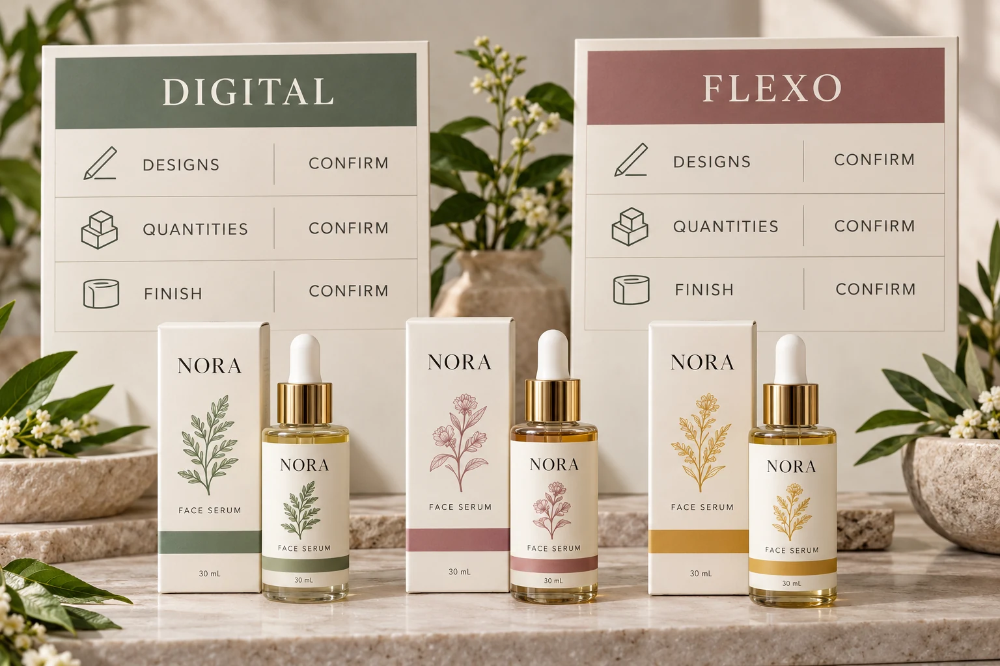

Put the version mix into the brief
List the quantity required for each artwork version, not only the total labels. Identify which features are shared and which change: product name, variant color, market copy, dimensions or decorative layers.
Also state how stable the artwork is. A confirmed repeat with unchanged files is different from a launch in which one variant still awaits approval. Ask the supplier how a later change would affect its proposed production plan and quotation.
This does not establish that a particular press must be used. It exposes the purchasing conditions that a process proposal needs to address. Our low-MOQ cosmetic label guide covers the broader launch-quantity conversation; the task here is comparing the actual production routes being offered.
Check the equipment claim before using it as a rule
HP describes its Indigo V12 digital press for mid- to long-run work and multiple-SKU or variable jobs. That equipment example is enough to challenge the idea that digital production is inherently limited to very short runs. It is not evidence of the equipment, price or capacity available for your YT Labels project.
BOBST's label-production overview likewise presents different technologies and configurations, including inline flexo and digital arrangements. Its equipment examples do not establish a universal winner for cosmetic packaging.
Ask the proposed supplier which process and relevant finishing arrangement it is quoting. You do not need to purchase a machine to compare a label order. You do need enough information to understand what its proposed route changes for your job.
Hold the construction and finish constant where possible
Two prices may differ because the proposals include different stock, adhesive, protective finish or decoration. If one includes a metallic effect and the other only a printed color, the comparison is not solely digital versus flexo.
Ask for the named construction and agreed visual requirements in both proposals. Where a difference is necessary, record it openly and compare its effect on the pack, sampling and purchasing conditions. Do not hide it inside a general phrase such as premium film.
Color and appearance deserve their own agreed references. A process label does not establish that the finished label will match a carton or a retained bottle sample. The cosmetic color proofing guide covers that separate decision.
The same separation applies to application. Confirm the required delivery format with the actual operator. A print-process decision does not replace the co-packer's roll specification.
Ask what the quotation includes
Instead of applying a generic volume threshold, use a job-scope worksheet. Enter actual supplier responses and leave unknown terms open; the table itself contains no prices or assumed minimums.
| Comparison field | Digital proposal | Flexo proposal |
|---|---|---|
| Artwork versions | Confirm included files and revisions | Confirm included files and revisions |
| Quantities | Record quantity by design and agreed order terms | Record quantity by design and agreed order terms |
| Construction | Identify stock, adhesive and protective finish | Identify stock, adhesive and protective finish |
| Appearance | Identify color and decorative requirements | Identify color and decorative requirements |
| Setup and changes | Confirm included preparation and effect of revisions | Confirm included preparation and effect of revisions |
| Sampling | State what proof or physical sample is included | State what proof or physical sample is included |
| Delivery | Confirm roll or sheet build, packing and shipment scope | Confirm roll or sheet build, packing and shipment scope |
If both proposals cannot answer an important field, resolve it before treating the prices as directly comparable. If they intentionally supply different outcomes, explain that tradeoff to the person approving the purchase.

Two buyers can reasonably choose different routes
Consider a hypothetical launch with several versions, uneven quantities and unfinished copy. The buyer has a reason to ask how each supplier handles those versions and late changes, including their sampling and approval conditions. A responsive, clearly scoped proposal can matter more than a simplified rule about order size.
Now consider an established product with stable artwork and a repeatable specification. Its buyer can compare the actual repeat conditions and whether the proposed arrangement meets the visual, material and application requirements. A process used successfully before is relevant information, but it still needs current commercial confirmation.
Neither example proves an automatic result. A route can be attractive in one supplier's configuration and less suitable in another. Keep the decision attached to the accepted job and the written offer.
Compare the whole purchase without inventing savings
Ask what happens if quantities change, a version is removed or a finish is revised. Request a revised quotation where the change matters. Do not calculate a supposed saving from numbers that describe different constructions, delivery scopes or approval assumptions.
Also separate the requested in-hand date from a confirmed production and shipping commitment. This guide does not provide universal turnaround times, setup charges or print-price curves. A supplier's specific offer is needed before the buyer can assess the actual commercial tradeoff.
For the full specification brief, use our custom label buying guide. Keep a copy of the final agreed comparison with the purchase release so the reasons remain visible when the range is reordered.
Send one brief that both routes can answer
For custom cosmetic labels, provide each container and label size, artwork revisions, quantity by design, required appearance, construction preferences and application method. Identify unfinished decisions rather than disguising them as approved requirements.
Use the inquiry form to prepare the message, then send artwork and references by email or WhatsApp. The form does not upload attachments. Ask which route is suitable for the actual brief and what remains to be confirmed before a quotation can become a production release.